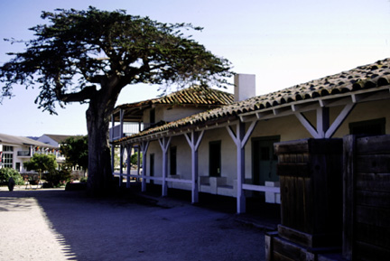

Customs House. Just after leaving the wharf you come across this building. This is the Customs House, California's oldest government building, which was constructed in 1827 for the collection of duties (taxes) on imported goods . The U.S. flag was officially raised at the Customs House in 1846 by Commodore Sloat. Today the Customs House is open for tours of the interior to help give visitors a greater understanding of Monterey's history. The photograph was originally produced with late afternoon sun and a 35 mm camera using Provia slide film, shutter speed 125, F6.7. Photo copyright Andrea L. Arredondo, May 11, 2000.
Updated by Andrea Arredondo
5/19/00